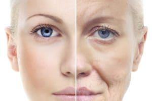

Skin Gold → O Melhor? Confira Aqui (Amei o 2º)

Oi meninas,
Hoje vou falar de produtos antirrugas, inclusive sobre o Skin Gold, um produto que está dando o que falar entre a mulherada.
O post é dedicado a todas as mulheres que gostam de cuidar da pele, mantê-la sempre bonita e saudável.
As rugas chegam para todas as pessoas, é um processo natural da vida, mas enquanto pudermos evitá-las, melhor!
Então continue comigo e conheça alguns dos meus segredinhos para que elas demorem cada vez mais para aparecer!!!
Alice Duarte
Ótimo conteúdo Fê, não conheço o produto mas vindo de você com certeza deve ser ótimo Quando puder faça algum artigo sobre estria ... estou desesperadaaa! Kkk
Amigas da Fê
Obrigado Fofa, pode deixar que vou providenciar um conteúdo bem especial!
Léia Brito
Eu uso o produto realmente é ótimo, Vale a pena. Só o prazo para entrega que demora bastante mas chegou direintho.
Marcela
Fernanda, você sabe me falar por quanto tempo devo usar o Skin Gold?
Amigas da Fê
Oi Marcela, posso sim! Amiga, a duração do tratamento é de 90 dias, mas o fabricante fala que se quiser continuar usando não tem problema algum (É o que eu fiz rs).
Alessandra
A partir de que idade pode usar o produto? Alguém que já usou o que achou? Minha filha de 15 anos tem muitas manchas e cicatrizes de espinha e que usar. Será que pode?
Vanessa Marinho
Oi Mana, eu tenho 17 anos e uso o produto não tive nenhum problema ...
Karol Dutra
Eu também quero comprar, resolve manchas de espinha?